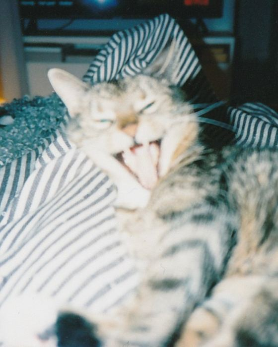

I'm an Art Director and Graphic Designer based in Stockholm, currently working as Lead Designer at Prime Weber Shandwick.
I've always been curious about people, what catches our attention, what we care about and why some things stay with us. That curiosity has shaped the way I work. I listen and try to understand what really needs to be said before deciding what the visual world should look like.

My background started in fashion at H&M and later took me to Beckmans and Berghs, and into graphic design and visual communication. Along the way, I've learned to trust both strategy and intuition, and that the most interesting ideas often appear when different worlds meet.
I like making things with a reason to exist. Things that are useful, thoughtful and made to last. Often, that means creating something new out of what's already there, finding the essence and clarity. Sometimes that means a strong visual idea. Sometimes it means taking something away. And sometimes it means leaving a little room for thought.